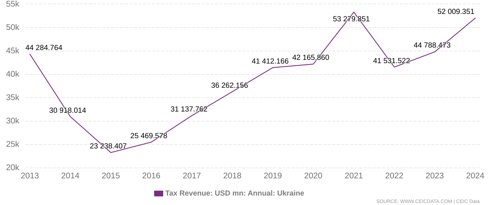
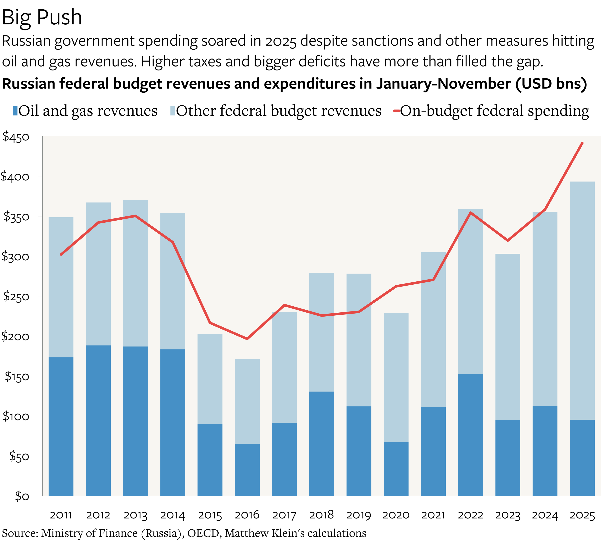
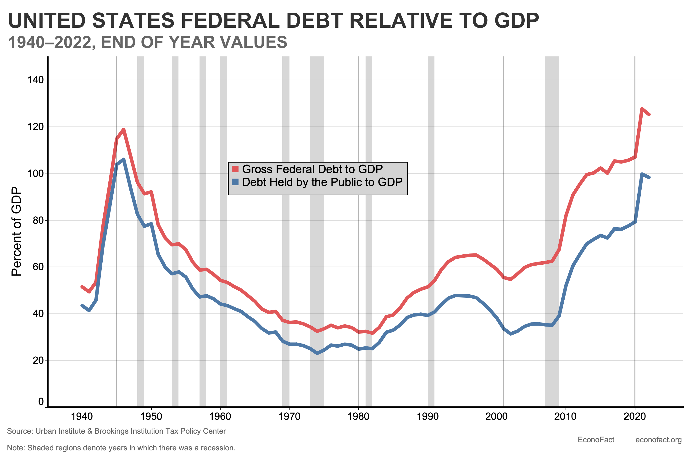
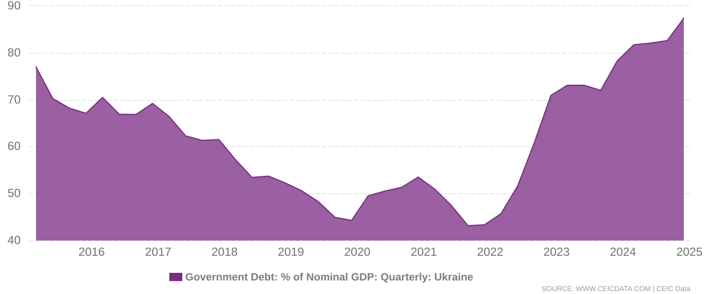
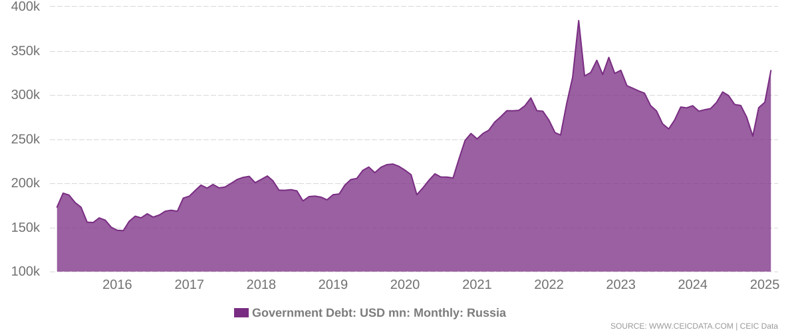
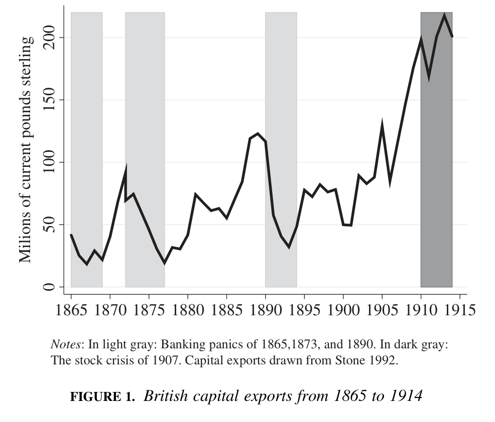
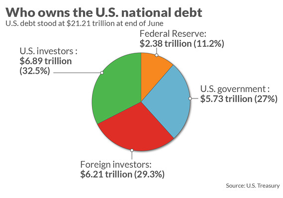
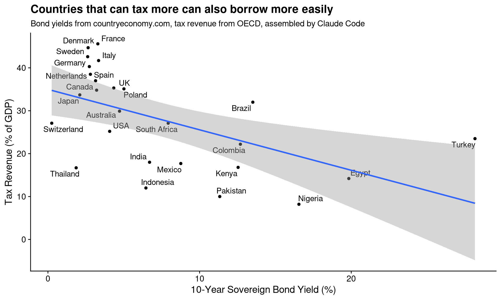
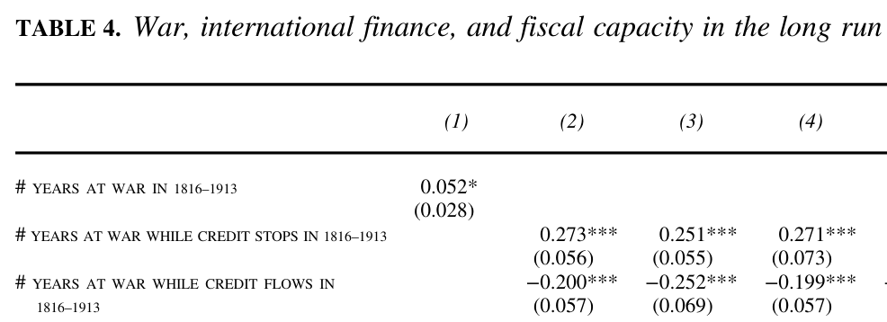
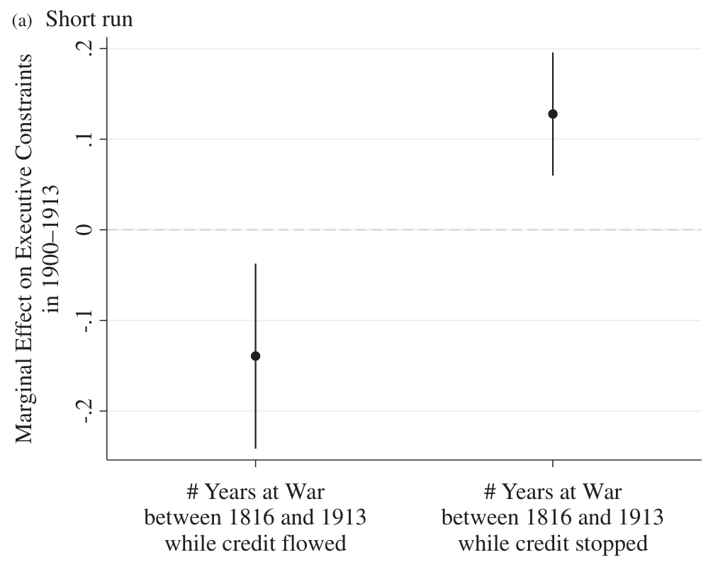

Paying for war: Taxes versus debt
PSCI 2227: War and State Development
February 23, 2026
Today’s agenda
Revenue and war — where we’ve been so far
- Levi: rulers want max revenue, but must bargain with elites
- War shifts bargaining power in favor of rulers (mostly)
- War should increase revenue in short run
- And long run too, via ratchet effect
- Karaman and Pamuk’s stats: war raised fiscal capacity in Europe
Problem for this tidy story: what about when foreign debt pays for war?
Debt and war: Theory
War increases tax revenue…

War increases tax revenue…

War increases tax revenue…

…and war increases debt

…and war increases debt

…and war increases debt

Who do states borrow from?


Advantages of debt finance
Why fund a war with debt instead of taxes?
The Klarna logic.
- Why pay now when you can pay later?
- War threat \(\leadsto\) might be dead tomorrow \(\leadsto\) shorter time horizon
Loosening the bargaining constraints.
- Domestic constituencies demand political concessions
- Already squeezed by war: conscription, inflation, trade restrictions…
- Banks just demand future payment with interest
Debt finance, war, and statebuilding
Standard logic of war and revenue
- War \(\leadsto\) greater revenue need, less elite bargaining power
- Efficient tax collection systems and successful elite bargains develop
- These persist even after war (ratchet effect)
How does debt finance break this chain?
- Less incentive to cultivate/measure tax base
- Less incentive to grow the economy in the long run
- No need to share power with elites and reach long-run bargains
Hypothesis: War makes the state only when funded by taxes, not debt
Debt finance and war: counterpoints
Hypothesis: War makes the state only when funded by taxes, not debt
…but there are some reasons for skepticism
- Ricardian equivalence: debt’s gotta be paid, so taxes will be raised sometime
- Political logic: if debt breaks the state, shouldn’t rulers use taxes?
Counter-counterpoints:
- Debt sometimes defaulted or “paid” w/o taxes (oil, land, monopolies)
- Short time horizons → repayment might be someone else’s problem
- Did rulers understand that war made the state?
Why not always pay for war with debt?
If war loans solve political problems, why do we ever see rulers raise taxes instead of taking out debt?
Lack of credit access — endogenous.
- Bad war prospects, prior defaults \(\leadsto\) high market interest
- At some margin, better to eat the political costs now
- Eventually, lenders simply won’t loan to bad enough credit risks
Lack of credit access — exogenous.
- Financial crises and stock crashes dry up supply of capital
- Particularly in 1800s, when Britain was >50% of foreign capital market
Debt and war: Evidence
How to study the effects of war debt
Causal hypotheses:
- War paid for by taxes \(\leadsto\) high long-run fiscal capacity
- War paid for with debt \(\leadsto\) no/negative change
Suggests a tempting but problematic method of analysis
- Count up taxes each state raised for war
- Count up debts each state incurred for war
- See how well each predicts future fiscal capacity
Why would we go wrong doing it this way?
The endogeneity problem
Actual debt incurred for war represents multiple things
- Exogenous credit supply — how much capital is out there to lend
- Endogenous credit supply — how risky is this borrower?
- How well the war is going — how much damage has the domestic economy taken?
Endogenous credit risk + war performance are confounding variables
- Could directly impact long-run capacity, aside from effects on debt finance
- Hard to trace differences in long-run outcomes to the choice of instrument rather than the competency and reliability of the government
The endogeneity problem

Queralt’s solution
Britain was the “world’s banker” between Napoleonic Wars and WWI
Localized shocks to British markets \(\leadsto\) exogenous contraction of credit supply
Research design
Dependent variables: long-run fiscal capacity
- Income taxation as proportion of GDP, 1995–2005
- Tax administration staffing per capita
- Value-added taxes
Independent variables:
- Years at war, 1816–1913, when British capital flow “stopped”
- Years at war, 1816–1913, when British capital flowed normally
Expectation: War participation only builds the state in periods of credit stops
Statistical findings

Why does war-without-credit make the state?
Apparent mechanism: Forcing the ruler to share power

Wrapping up
What we did today
- Debt as an alternative to taxes for war finance
- Advantages: pay later, avoid political concessions to elites
- But: breaks the war \(\leadsto\) state chain
- Why not always use debt? Credit is limited by risk + market shocks
- Queralt’s evidence on debt, war, and statebuilding
- British capital market shocks as exogenous credit supply variation
- Finding: war builds the state only when credit is unavailable
- Mechanism: forced power-sharing with domestic elites
From here, we’ll dig deeper into that “forced power-sharing” — look at effects of war on parliaments
To do for next time
Read Kenkel and Paine 2023, “A Theory of External Wars and European Parliaments”
- Do external threats make rulers more likely to share power with parliaments?
- We say: sometimes yes, sometimes no
- Threats make ruler more willing to share… but affect elite incentives in countervailing ways